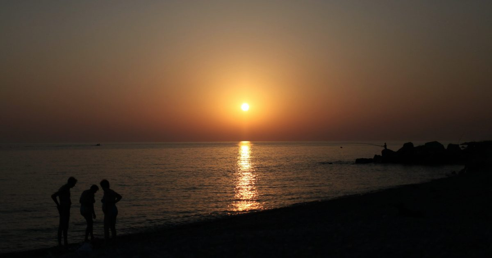

Двенадцать глав
Город раскрывается через отдельные места и истории, связанные в единый документальный маршрут.
КОМАНДНЫЙ УЧЕБНЫЙ ПРОЕКТ
Город. Слой за слоем.
Документальный маршрут по Сочи: двенадцать глав, архивные фотографии, карты и сопоставления «тогда и сейчас».

1838 — 2026СОЧИ01 / ЗАДАЧА
Рассказать, как менялся Сочи и какую роль в его развитии играло государство. Связать историческое повествование с реальными местами, которые можно увидеть самостоятельно.
Маршрут организован по карте, а не строго по календарю: главы можно пройти пешком и на транспорте.
02 / КАК УСТРОЕНО
Статический многостраничный сайт объединяет пролог, двенадцать глав, интерлюдию и эпилог. Архивные изображения и карты встроены в рассказ, а пары фотографий помогают сравнить город в разные эпохи.
Авторы глав указаны в титрах на соответствующих страницах. Общая страница источников собирает материалы проекта и даёт читателю возможность проверить исторический контекст.
03 / ЧТО ВНУТРИ
Город раскрывается через отдельные места и истории, связанные в единый документальный маршрут.
Архивные снимки сопоставляются с более поздними видами, делая изменения города наглядными.
География помогает следовать маршруту; ссылки на источники сохраняют связь повествования с материалами.
Финальная проверка знаний помогает вернуться к основным темам после прохождения маршрута.
04 / СТАТУС
Опубликованный командный проект НИУ ВШЭ по курсу «Основы российской государственности». Участники и авторство глав указаны на сайте проекта.